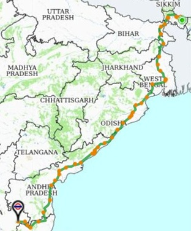

Route Map
Official corridor route map for 16597 | SMVT Bengaluru – Alipurduar Amrit Bharat Express Train showing key intermediate junctions across its 2670 kilometres journey.

Passenger Travel, Catering & Booking Guide
On-Board Amenities & Push-Pull Technology
Built on modern LHB push-pull architecture with dual locomotives at either end, the 16597 Amrit Bharat Express delivers faster acceleration at intermediate stops and jerk-free ride comfort via semi-permanent couplers. All coaches are fully non-air-conditioned and feature upgraded cushioned berths, individual mobile charging sockets per bay, bottle holders, foldable snack tables, sensor-based bio-toilets, and CCTV surveillance in common doorways.
Meals, Water & Strategic Station Halts
This Amrit Bharat Express rake includes a dedicated Pantry Car (PC) positioned centrally in the rake, providing hot meals, tea, snacks, and packaged Rail Neer water directly to passengers. Key extended halts (5 minutes or longer) along the route include: Katpadi Jn (KPD) [12:20–12:25, 5 min halt], Renigunta Jn (RU) [14:30–14:40, 10 min halt], Vijayawada Jn (BZA) [20:45–20:55, 10 min halt], Vizianagram Jn (VZM) [05:00–05:10, 10 min halt], Brahmapur (BAM) [08:27–08:32, 5 min halt], Khurda Road Jn (KUR) [10:25–10:40, 15 min halt]—making these the most convenient stations for refilling water bottles and picking up fresh refreshments.
Seating Capacity, Booking Rules & Live Running Status
A standard 22-coach Amrit Bharat rake provides 640 reserved berths across 8 Sleeper Class coaches (S1–S8) and roughly 1,100 unreserved seats across 11 General Seating coaches (GN), plus 2 SLRD coaches with wheelchair-accessible compartments for Divyangjan passengers. Reserved Sleeper bookings open 60 days in advance on the IRCTC portal, with the Tatkal quota opening at 11:00 AM IST on the day prior to departure. Unreserved tickets for General coaches can be purchased at station counters or via the UTS On Mobile app within the permitted station geofence.
Before departing for the station, verify live train running status and platform numbers on the official National Train Enquiry System (NTES), and check seat availability or book reserved tickets via IRCTC Next Generation eTicketing.
Frequently Asked Questions (FAQs)
Does 16597 Amrit Bharat Express have a pantry car?
Yes. Train 16597 features an onboard Pantry Car (PC) that serves meals, beverages, and snacks throughout the journey, supplemented by station catering at major halts.
Are blankets, sheets, and pillows provided in Sleeper Class?
No. Because Amrit Bharat Express is a non-AC superfast train, bedrolls, blankets, and pillows are not provided by Indian Railways. Overnight passengers should carry their own light bedding.
Can I board Sleeper coaches with a General (UTS) unreserved ticket?
No. Unreserved tickets issued via station counters or the UTS mobile app are valid strictly in the General Seating (GN) coaches. Entering reserved Sleeper coaches without a valid reservation incurs penalty charges.
Are mobile charging points available at every seat?
Yes. Sleeper coaches in Amrit Bharat rakes are equipped with individual mobile charging ports alongside bottle holders and snack tables adjacent to the berths.